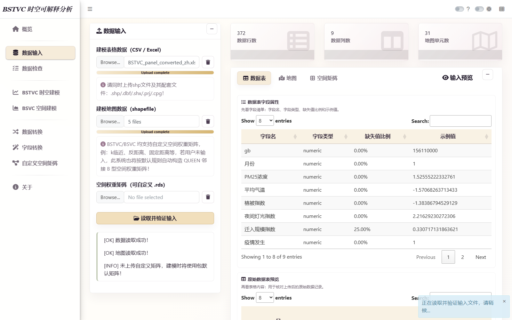
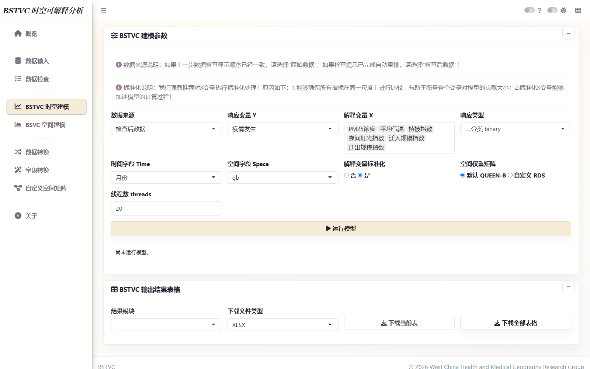
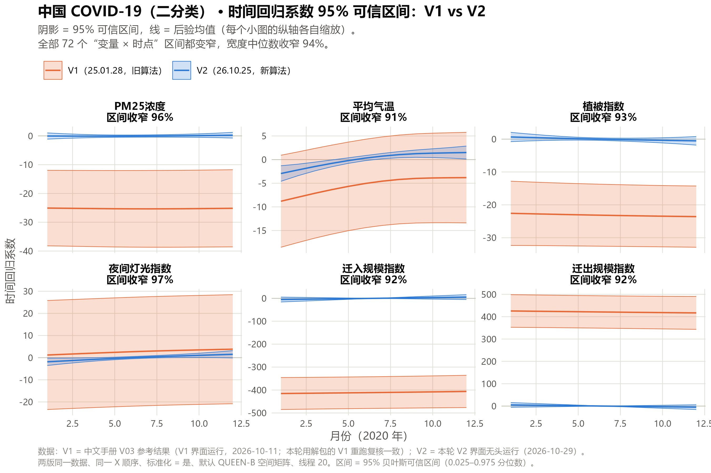
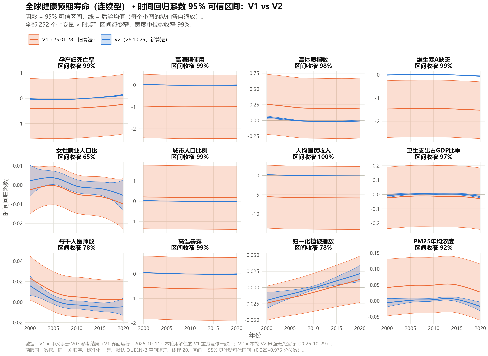
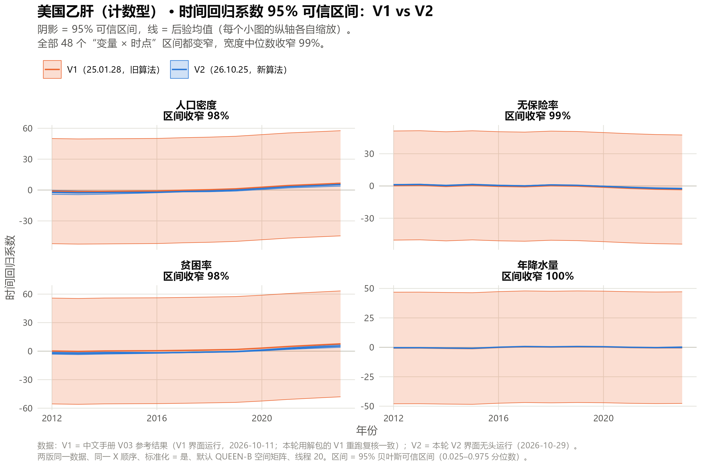
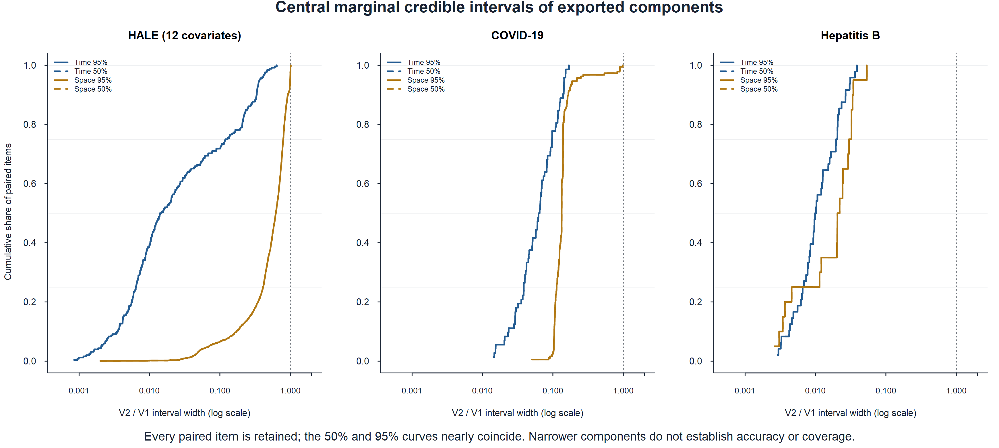
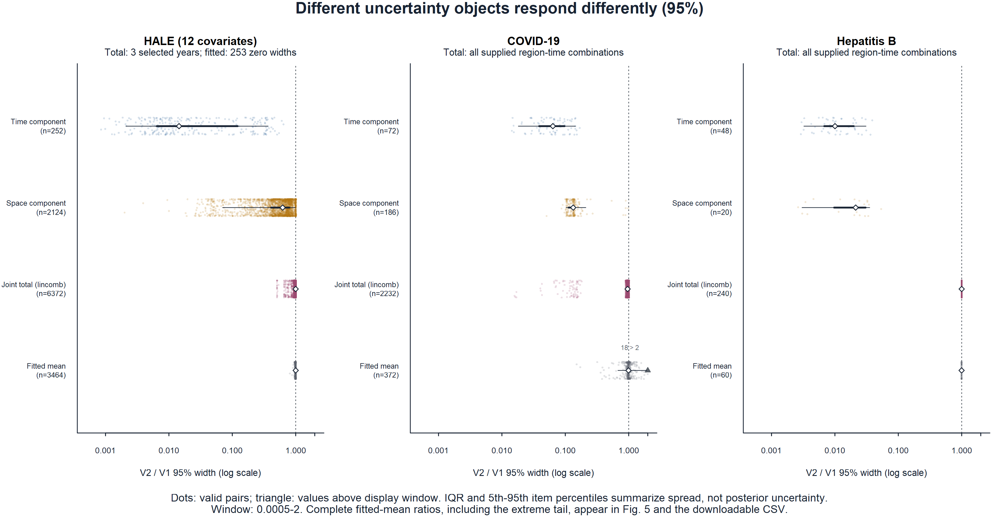
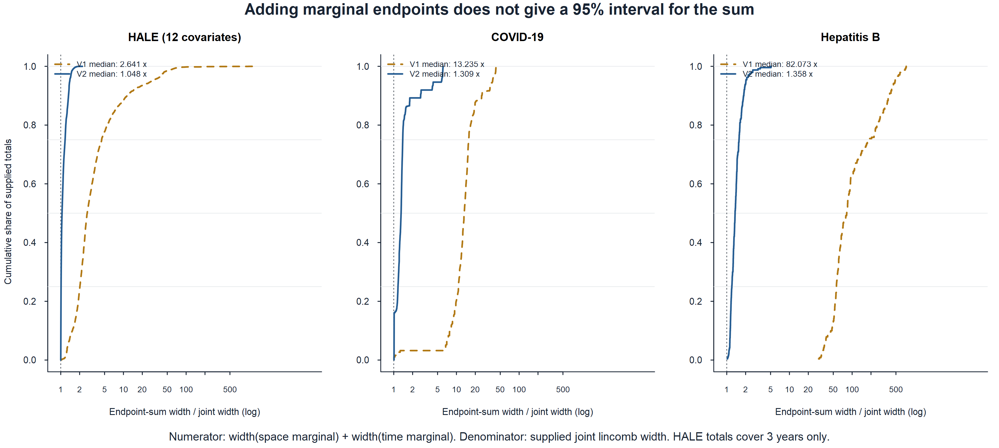
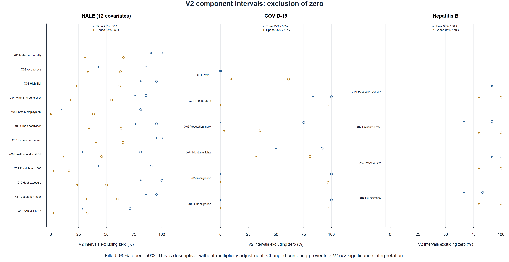
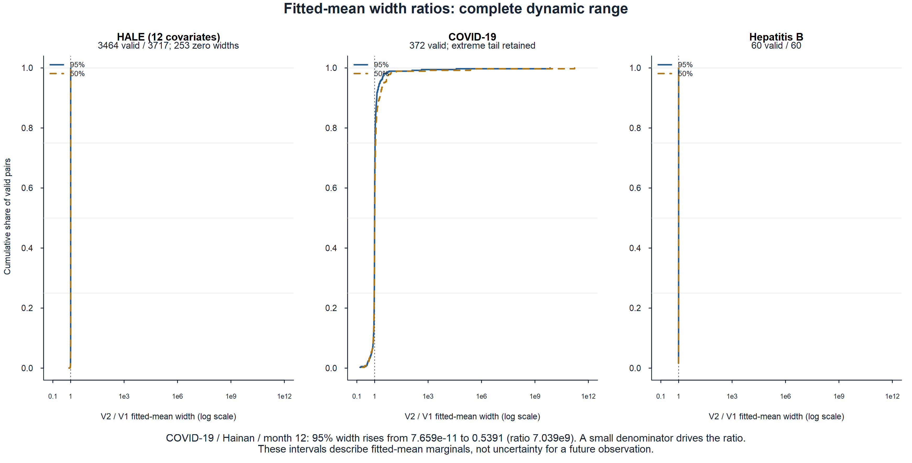

BSTVC DESKTOP / CHINESE USER GUIDE
从第一次建模，
到读懂时空变化的证据。
BSTVC 中文在线用户手册 · V2。把数据准备、界面操作、结果解读与三个真实案例放在一起；用可复现的 V1/V2 实验，说明新版改进了什么，以及哪些问题还需要进一步验证。
这是中文用户手册的统一在线入口。安装与案例资料通过官网下载区获取；帮助内容以本页为准。新版实验证据来自中文 V03 案例基线与 2026-10-29 的 V2 验证，图表和数值均标明比较对象。
01 / QUICK START第一次建模，按这六步进行
可以先用中国 COVID-19 二分类案例熟悉流程，再处理自己的研究数据。使用桌面软件本身不需要单独安装 R，也不要求编写代码；后半部分的 R 代码用于复算与作图。
- 准备一张面板表和一套地图文件。每行是一个“地区 × 时期”。地图保留 .shp、.dbf、.shx、.prj 及配套 .cpg，使用稳定的空间 ID。
- 进入“数据输入”，读取并验证。选择 CSV / XLSX 与地图配套文件，点击“读取并验证输入”，核对行数、列数和地图单元数。
- 进入“数据检查”，核对空间与时间。选择 Time、Space，检查面板键、地图匹配和顺序。若系统完成自动重排，建模时选择“检查后数据”。
- 进入“BSTVC 时空建模”，选 Y、X 与响应类型。连续型、二分类和计数型应与结局相符。首次运行可从默认 6 线程开始；复现实验则使用本页记录的完整设置。
- 点击“运行模型”，等待明确完成。保留运行消息。切换案例后，下方仍可能显示上一轮结果，必须等当前任务完成后再核对。
- 下载全部表格，先看区间，再写结论。同时检查模型评价、系数分量、数据支持与拟合量。保留原表、地图、设置和本次导出的 XLSX。
02 / INSTALL & INTERFACE安装、启动与界面
从中文官网下载区进入百度网盘，获取中文版 V2 安装包及案例资料。用户帮助统一使用本在线手册；旧 PDF、旧版随包 HTML 不作为当前操作说明。英文安装包的发布状态以英文站公告为准。
安装后打开 BSTVC。首次启动需要初始化内置计算环境，请等界面加载后再操作。建议把输入和结果分别放在简短的本地路径，例如 D:\BSTVC_data 与 D:\BSTVC_results；遇到路径或权限问题时，先用短 ASCII 路径定位原因，保留原件。
| 左侧入口 | 作用 | 操作前核对 |
|---|---|---|
| 数据输入 | 读取表格、地图与可选空间矩阵 | 文件齐全、空间 ID 一致 |
| 数据检查 | 检查面板结构、空间匹配与顺序 | 当前数据与检查消息 |
| BSTVC 时空建模 | 分析随地区与时期变化的系数 | Y、X、Time、Space、响应类型与标准化 |
| BSVC 空间建模 | 分析单个截面的空间变系数 | 截面与空间键；没有时间分量 |
| 数据转换 / 字段转换 | 将宽表转换为面板、整理字段 | 变量块、时间顺序、转换后行数 |
| 自定义空间矩阵 | 使用与研究设计一致的空间关系 | 维度、ID 顺序、连接性与定义 |
下列截图来自 V2 无头浏览器界面验证，不是旧版界面换标题。它们证明对应步骤曾执行；原生桌面窗口的完整人工验收与这条证据链是不同事项。


03 / DATA PREPARATION准备数据：先把研究对象与键对齐
3.1 一行对应一个地区、一个时期
面板需要空间键、时间键、响应变量 Y 和解释变量 X。ID 是表格与地图的连接依据，名称相似或行号相同不能代替键匹配。行政代码含前导零时保留完整编码，避免 Excel 自动改写。
| 空间键 | 时间键 | Y | X1 | X2 |
|---|---|---|---|---|
| A | 2020 | 原始观测值 | 原始数值 | NA |
| B | 2020 | NA | 原始数值 | 原始数值 |
| A | 2021 | 原始观测值 | 原始数值 | 原始数值 |
| B | 2021 | 原始观测值 | 原始数值 | 原始数值 |
本页 V2 案例允许并保留原始 Y / X 中的 NA 及面板行。不要自动删成完整案例、把缺失 X 填成 0，或把未知 Y 当作 0。缺失会削弱某些地区、时期或变量的信息支持，需要在解释中说明；允许输入缺失不等于每个结果都有足够信息。
3.2 宽表转换为面板
若一行是一个地区、月份或年份分布在多列中，先使用“数据转换”。保留空间 ID，逐个配置 Y 与 X 的时间列块；每个块的列数与顺序必须对应时间序列。2020 年 1–12 月应有 12 列，不能将“1、10、11、12、2…”的字符串排序误作时间顺序。
- 选择空间 ID，填写起止时间或明确时间序列。
- 分别选取每个变量的整段时间列，核对变量名与列范围。
- 执行转换，检查地区数 × 时期数、首末时间与抽查值。
- 保存转换结果，重新载入面板表后做数据检查。
本次比较的 COVID 与 HBV 使用相同的已转换面板，避免混入转换差异；本轮未重新验收 V2 的宽表转换按钮全过程。
3.3 地图、邻接与数据检查
一次选全 Shapefile 配套文件。核对地图键与表格键的类型、唯一性及集合；检查若重排了行，之后选择“检查后数据”。本页复现实验均使用默认 QUEEN-B：Queen 邻接的二元权重。
孤立地区和多个连通块需要记录。不要为消除报错直接删岛屿或地区，这会改变研究总体。先检查几何有效性、邻接规则和矩阵顺序，再按研究设计决定是否修复地图或使用自定义关系；修复另存并记录。
3.4 用 R 做不改变数据的预检查
下面只报告键和缺失状况，不填补、不删行、不拟合。字段名替换成自己的字段；读取 Excel 可使用已安装的 readxl。
d <- read.csv("panel.csv", check.names = FALSE, colClasses = "character",
na.strings = c("", "NA"))
space <- "region_id"
time <- "year"
y <- "outcome"
xs <- c("X1", "X2")
stopifnot(all(c(space, time, y, xs) %in% names(d)))
stopifnot(!anyNA(d[c(space, time)]))
if (anyDuplicated(d[c(space, time)])) stop("存在重复的地区×时期键，请先核对原始记录")
print(c(rows = nrow(d), regions = length(unique(d[[space]])),
periods = length(unique(d[[time]]))))
print(colSums(is.na(d[c(y, xs)])))
# 保留原始数值、NA和所有行；不做complete.cases()筛选。04 / MODEL SETUP设置与运行：每项选择都要有研究含义
| 参数 | 如何选择 | 常见错误 |
|---|---|---|
| 数据来源 | 检查重排后用“检查后数据” | 仍用原始顺序，结果与地图错位 |
| 响应变量 Y | 研究结局，记录单位与定义 | 将率、人数、病例数混为一谈 |
| 解释变量 X | 按研究问题选择，记录顺序与单位 | 只为训练 R² 加变量，或换顺序挑结果 |
| 响应类型 | 连续型 / 二分类 / 计数型与结局相符 | 把率当计数、多类标签当二分类 |
| Time / Space | 时间字段、与地图匹配的空间字段 | 把年份误选为 X |
| X 标准化 | 本页三例为“是”；注明标准化后的量纲 | 把系数解读为原单位 X 增加 1 |
| 空间权重 | 按空间关系选择；本页为 QUEEN-B | 替换矩阵不核对 ID 顺序 |
| 线程数 | 从默认 6 开始；主比较为保持设置用 20 | 认为更多线程必然更快 |
二分类 Y 使用明确的 0 / 1 编码。计数型保留非负整数计数，不要把病例数除以 10 或 100 当作数值修复；若需要暴露人口或观察时长，应明确模型是否支持相应暴露量或 offset，不能将计数与率混用。本页对数正态连续型路径要求观测 Y 为正；若含零或负值，先核对结局定义和模型适用性，不自动添加常数。


记录软件与核心版本、数据、地图、空间键、Time、Y、X 及顺序、响应类型、标准化、权重、线程、日期和导出文件名。修改数据或设置后视为新运行，不混用上一轮结果。
05 / READING V2 COEFFICIENTSV2 的系数，应该怎样读
对于本页验证的时空变系数模型，局部系数可写作：
相对建模时期平均的偏离
V2 时间分量以所建模时期的算术平均为零。正值表示该期相对平均更正向，负值表示更负向；单独不是某地某时的完整作用。
该分解下的地区系数水平
空间分量包含时间中心化后分配给空间部分的平均水平。它不是围绕全局固定斜率的纯空间偏离，也不能直接视为因果效应。
某地、某时的完整局部斜率
两分量后验均值可以相加；总系数可信区间需要联合后验或线性组合计算，不能直接相加两个边际区间的端点。
5.1 V2 处理了哪一种分解歧义
仅从相加关系看，s + c 与 γ − c 的和相同。缺少明确的常数分配约定时，两部分可能出现很大的相反偏移，单独解释很困难。V2 使用时间零和中心化，处理这一常数分配歧义，让时间分量具有“相对建模时期平均的偏离”这一参照。
V1：两本账可以搬动常数
示意：空间 +415，时间 −411，总和 +4。
很大的分量均值不代表很大的完整作用。
V2：时间以平均为零
空间记录该分解的平均水平，时间记录时期偏离。
读取分量有了明确参照。
上面是常数搬移示意，不是某单元的新拟合值。零和约束不等于已证明所有数据、协变量和图结构下的完全可识别性，也不是数值收敛或后验校准的充分证明。
5.2 可信区间与“零”的含义
本页 95% 可信区间采用后验 2.5%–97.5% 分位数，50% 区间采用 25%–75% 分位数，描述给定模型、数据、先验和设置下的后验不确定性。宽度为上限减下限，不同量纲的原始宽度不能直接比较。
V2 时间分量区间不含零，表示相对建模时期平均水平的偏离获得相应后验支持；不等于证明“该因素在此期有作用”或因果归因。两版分量定义和零点不同，不能将不含零比例的变化称作真阳性或假阳性的变化。
5.3 模型尺度与响应尺度
本页 HALE 连续型路径使用对数正态模型，系数位于对数响应的线性预测尺度；二分类为 log odds 尺度，计数型为对数均值尺度。X 标准化后，系数对应标准化 X。指数变换后的连续型潜在拟合水平不能不加说明就称响应均值；解释时注明分布、变换和实际字段。
STVPI 等指标称“相对贡献”或“全局贡献”。它们与局部系数、区间和时空模式可以为时空归因研究提供重要证据；仅凭这些输出，不能确认因果归因。
06 / RESULTS & EXPORT六类结果：先核字段，再组织证据
运行完成后，在“结果模块”切换表格，使用“下载当前表”或“下载全部表格”。建议保存完整 XLSX，再生成论文图；字段以实际导出工作簿为准。
| 结果表 | 用途 | 解读边界 |
|---|---|---|
model.evaluation | DIC、WAIC、LS、复杂度和运行记录 | 可比数据和尺度下判断；单个符号不能确定故障原因 |
time.coefficients | 时间分量均值、标准差和分位数 | V2 为相对时期平均的偏离，不是完整斜率 |
space.coefficients | 空间分量及边际区间 | 按 ID 连地图；报告邻接和观测支持 |
summary.random.effects | 随机效应超参数等概括 | 明确参数定义和尺度，不与局部斜率混读 |
STVPI | 模型内变量相对贡献 | 核对分母、响应类型与残差处理；不能作因果归因 |
local.prediction | 软件导出的局部拟合量与区间 | 不自动等于未来观测预测区间；核对缺失 Y、变换和异常输出 |
6.1 评价模型时，避免三个捷径
- 训练 R² 高不等于样本外预测好。更多 X 不保证泛化改善；按研究问题选变量，以独立留出或时空阻断验证评价预测。
- 负的 DIC 或复杂度不是单一故障诊断。结合模型、尺度、警告和数据支持核查，不用换变量顺序直到符号“正常”。
- 区间更窄不一定代表模型更正确。定义、先验、约束与信息支持都会影响区间，不能将不同估计量的宽度变化直接称作精度提升。
6.2 作图时保留不确定性
时间图同时展示均值和 50% / 95% 区间，按实际年份或月份标记。空间图按键连接，跨时期使用相同色标，区分缺失、信息不足与真实零。平滑曲线不能替代原始后验结果，也不要为视觉紧凑隐藏较宽区间。
本页总系数来自额外的联合线性组合核查，不是目前六张常规导出表之一。只有边际表时可相加均值，不能重建正确总区间；第 09 节用实际结果说明端点相加为什么会出错。
07 / THREE VERIFIED CASES三种结局，三个完整案例
三例使用中文案例资料和 V1 参考工作簿，在 V2 中完成无头浏览器输入、检查、建模与全部表格下载。共同设置为检查后数据、X 标准化“是”、QUEEN-B、20 线程；复现时保持数据、顺序和设置一致。
7.1 中国 COVID-19：二分类
V2 已验证 31 省级单元 × 2020 年 12 个月，372 行。Y“疫情发生”为 0 / 1，Time“月份”，Space gb；使用中文转换面板与 ChinaProv 地图。
X 顺序：PM25浓度、平均气温、植被指数、夜间灯光指数、迁入规模指数、迁出规模指数。
- 读取表格与地图，点击“读取并验证输入”。
- 按“月份”与 gb 检查，选择“检查后数据”。
- 选择 Y、六个 X、“二分类 binary”和共同设置。
- 完成后下载全部表格：时间分量应为 6 × 12 = 72 项，空间分量 6 × 31 = 186 项。
海南在 Queen 图中无邻居，需要单独诊断。迁移变量存在成片缺失，不能填零消除。其总系数与拟合量区间是不同对象，下面比较中分别处理。
7.2 美国乙肝：计数型
V2 已验证 阿巴拉契亚 5 州 × 2012–2023 年，60 行。Y“病例数”，Time“年份”，Space GEOID；使用中文转换面板与 us_a5 地图。
X 顺序：人口密度、无保险率、贫困率、年降水量。
- 读取面板与地图，按“年份”和 GEOID 检查。
- 选择 Y、四个 X、“计数型 count”和共同设置。
- 完成后下载全部表格：时间分量 4 × 12 = 48 项，空间分量 4 × 5 = 20 项。
本例比较病例数的模型内关联。未加入或验证暴露量的计数模型不能自动解释为人口风险或发生率；不要将计数除以常数当作收敛处理。
7.3 全球 HALE：连续型
V2 已验证 · 12X 177 国家 / 地区 × 2000–2020 年，3717 行。Y“健康调整预期寿命”，Time“年份”，Space ISO_A3，地图 TestMap_Continuous。
X 顺序：孕产妇死亡率、高酒精使用、高体质指数、维生素A缺乏、女性就业人口比、城市人口比例、人均国民收入、卫生支出占GDP比重、每千人医师数、高温暴露、归一化植被指数、PM25年均浓度。
- 载入中文面板和地图，核对 177 单元、21 年，保留 NA。
- 按“年份”和 ISO_A3 检查，选择连续型、12 个 X 和共同设置。
- 保存完整工作簿：时间分量 12 × 21 = 252 项，空间分量 12 × 177 = 2124 项。
这是较大的案例。不要将 12X 结果与另一套原 6X 实验、旧训练 R² 或字段替换实验拼成同一个对照。地图包含多个连通块和孤立单元，空间区间变化并不一致。
六案例资料中的其他扩展案例，怎样使用？
中文 V03 资料还有非洲五岁以下死亡率、美国自杀二分类 / 计数型，以及 2016 年自杀状态的 BSVC 截面案例。可用于练习数据准备，但本轮未重新完成这些案例的 V2 比较，旧结果不能标为 V2 成绩。
地图修复保留原件和记录，派生二分类记录阈值，BSVC 仅报告空间分量。旧版“所有大计数必须关闭标准化”“加变量即可提高预测”“遇到岛屿就删除”等说法，不作为 V2 通用规则。
08 / V1 → V2我们的进步在哪里：把分量解释得更清楚
V2 的重要进步，是为时间系数分量确立明确的中心化参照，减少时间、空间分量之间常数分配的歧义。在三个真实案例中，时间分量区间全部变窄，空间分量区间总体变窄。用户因此更容易阅读“哪个时期相对平均更强或更弱”，而不是被两组很大、方向相反的分量误导。
更准确的表述是：V2 改进了时空系数分量的分解与解释，三个实证案例的分量可信区间明显收紧。这本身不等于证明完整局部斜率更精确、样本外预测更准，或所有模型的数值收敛问题已经解决。
8.1 实验设计：同一案例、同一设置、逐项配对
| 项目 | V1 基线 | V2 新版 |
|---|---|---|
| 软件 / 核心 | 中文旧版 25.01.28 | 中文新版 26.10.25 |
| 主要结果来源 | 2026-10-11 中文 V03 参考工作簿 | 2026-10-29 无头 GUI 建模并下载的工作簿 |
| 相同输入 | HALE 12X、COVID 6X、HBV 4X；每案相同面板、地图与变量顺序 | |
| 相同设置 | 检查后数据；X 标准化“是”；QUEEN-B；GUI 比较 20 线程；保留 NA | |
| 时间中心化 | 未采用新版时间零和约束 | 时间分量按建模时期平均为零 |
| 辅助核查 | V1 同机重跑；既有独立重建的联合线性组合；本页新增 R 逐键复算 | |
配对键为“案例 × 变量 × 时点”或“案例 × 变量 × 地区”，不按行号直接相除。先检查键唯一、键集合一致、区间有效和正宽度，再计算每项比值。
这是逐项宽度比的中位数，不是两个总体中位宽度之比。95% 与 50% 区间来自同一后验，是互补描述，不是两次独立实验。
8.2 95% 时间分量区间：372 项全部变窄
全球健康预期寿命
252 / 252 项变窄
2048 / 2124 项变窄
中国 COVID-19
72 / 72 项变窄
186 / 186 项变窄
美国乙肝
48 / 48 项变窄
20 / 20 项变窄
这些百分比描述两版实际导出分量的变化。由于分量定义与参照发生变化，不能写成“同一完整效应的精度提升了 99%”。接近 100% 的四舍五入值也不代表宽度为零。


查看 HALE 与 HBV 的全部时间分量图




8.3 空间分量：总体收紧，保留地区例外
2330 个空间分量区间中，2254 个变窄，约 96.74%。76 项变宽全部在 HALE 的孤立地区或小连通块，最大增宽约 1.65%。幅度虽小，没有重复精度实验时也不能直接称作数值误差。
HALE 大连通块的 1800 项全部变窄；孤立地区的 252 项中有 70 项变宽，小连通块的 72 项中有 6 项变宽。图连接性影响解释和不确定性，不能用全局百分比代替地区诊断。
查看三案例空间分量比较图


8.4 总局部系数：中位比接近 1，不代表每项相同
总系数来自既有独立重建模型与联合线性组合，用于辅助理解分量变化，不能声称与 GUI 的每个后验字节相同。HALE 只计算了 2000、2010、2020 三年；COVID 与 HBV 覆盖全部时期。
| 案例 | 配对项数 | 宽度中位比 V2/V1 | 最小–最大比 | 比值 < 0.9 项数 |
|---|---|---|---|---|
| HALE · 三年 | 6372 | 0.999201 | 0.507372–1.009705 | 180 |
| COVID · 全时期 | 2232 | 0.961138 | 0.015802–1.019206 | 103 |
| HBV · 全时期 | 240 | 0.999796 | 0.998985–1.001928 | 0 |
COVID 海南的 72 项总系数区间全部变窄，宽度比中位数约 0.1311，即中位收窄约 86.89%。因此，本轮支持“大部分总系数宽度变化较小，部分地区明显改变”，不能笼统说所有总效应均不变。
8.5 评价指标有变化，不作整体优越性结论
| 案例 | DIC：V1 → V2 | WAIC：V1 → V2 | LS：V1 → V2 |
|---|---|---|---|
| HALE | 14068.843 → 14076.147 | 16027.379 → 16030.968 | 2.203857 → 2.204488 |
| COVID | 298.174 → 306.376 | 297.161 → 303.152 | 0.980900 → 0.859148 |
| HBV | 538.143 → 537.961 | 564.259 → 563.943 | 7.101930 → 6.949491 |
COVID 的 DIC、WAIC 增加而 LS 降低，方向并不一致。本轮没有独立留出或时空阻断验证，也未预设等价性界限；LS 来自 CPO 的逐观测留一预测得分，不能替代独立留出或时空阻断验证。因此不形成整体拟合、预测能力的优越性或等价性结论。不同日期和负载下的运行时间也不构成受控提速实验。
辅助复现核查的实际边界
两个小案例的 V1 参考与同机重跑数值非常接近。HALE V1 DIC 为 14068.843421，同机重跑为 14070.583642，差 1.740221；不能将“差小于 0.001”套用全部案例。
带联合线性组合的 HALE V1 独立重建 DIC 为 14070.946096，与 GUI 参考相差 2.102675，重建 HALE LS 为 NA。指标接近不是两条运行链完全相同的证明；新增数据保留这些差异，不以舍入或补值掩盖。
09 / NEW REPRODUCIBLE ANALYSES新增 R 实验：改进与限制同时看清
新编写的 R 代码重新读取两版导出数值及既有联合线性组合，严格按键连接，独立复算并作图。以下是对真实结果的新增后估计实验；没有重新拟合、改变模型、添加全局斜率或替换研究变量。
这些实验重新读取中文版V03的三个参考案例及新版GUI导出表，按唯一键逐项配对并独立复算。HALE采用12个协变量的20线程基线；代码只分析既有结果，不运行模型拟合、抽样或私有算法。
解释边界：两版分量的中心化定义不同。区间收窄描述的是所导出的分量边际不确定性，不能单凭收窄推出准确率、收敛、覆盖率、因果识别或样本外预测的全面提升。
时间中心化核查：22个变量各自的V2时间分量posterior mean在全部时间点上的算术平均，最大绝对值为5.68411e-09；22项均小于本次明示数值容差10⁻⁸。这验证所导出均值的中心化口径相容，不是收敛、覆盖率或准确性证据，也没有重新中心化任何数值。
拟合量术语：本节沿用图表和文件中的历史fitted_mean标识，实际计算对象是软件导出的拟合量后验区间。HALE的exp(mu)一般不能直接解释为E[Y]，本次未补入对数正态均值修正或观测误差；这些区间也不是未来观测的预测区间。
9.1 中位收窄与逐项例外
| 案例 | 分量 | 配对项 | 中位收窄百分比 | 变窄项 | 变宽项 | 最小宽度比 | 最大宽度比 |
|---|---|---|---|---|---|---|---|
| 全球健康预期寿命（12X） | 时间 | 252 | 98.55452% | 252 | 0 | 0.000850857 | 0.641427 |
| 全球健康预期寿命（12X） | 空间 | 2124 | 37.73135% | 2048 | 76 | 0.00200224 | 1.01648 |
| 中国 COVID-19 | 时间 | 72 | 93.63251% | 72 | 0 | 0.0143475 | 0.168989 |
| 中国 COVID-19 | 空间 | 186 | 86.66999% | 186 | 0 | 0.0507545 | 0.983929 |
| 美国乙肝 | 时间 | 48 | 98.99652% | 48 | 0 | 0.00290437 | 0.0387722 |
| 美国乙肝 | 空间 | 20 | 97.87364% | 20 | 0 | 0.00262869 | 0.0536224 |
95%与50%区间分别由原始导出分位数计算；六组中位收窄百分比与参考报告一致。HALE空间分量中有76/2124项变宽，最大宽度比约1.01648，故“每一个区间都更窄”不成立。完整分变量与例外表见复现结果。


9.2 分量收窄不等同于总系数或导出拟合量同幅收窄
| 案例 | 重建总系数配对项 | 重建总系数95宽度中位比 | GUI导出拟合量有效项 | GUI导出拟合量95宽度中位比 |
|---|---|---|---|---|
| 全球健康预期寿命（12X） | 6372 | 0.999201 | 3464/3717 | 1.000600 |
| 中国 COVID-19 | 2232 | 0.961138 | 372/372 | 0.992701 |
| 美国乙肝 | 240 | 0.999796 | 60/60 | 0.996639 |
总系数取自既有独立重建模型的lincomb结果，是辅助核查；HALE仅覆盖2000、2010、2020三个年份。它与GUI原拟合不是数值完全相同的对象：例如HALE V1重建DIC比GUI高2.10268，且HALE重建LS未提供。因此不能把该辅助核查称为GUI原拟合的完整复现。
海南的总系数72项全部变窄，中位宽度比0.131108；与之同时，海南第12月导出拟合量95%区间宽度比高达7.039×10⁹。两个结果描述不同统计对象，不能互相替代。


9.3 为什么不能把边际区间端点直接相加
| 案例 | 版本 | 总系数项 | 端点相加宽度除以正确总系数宽度_中位倍数 |
|---|---|---|---|
| 全球健康预期寿命（12X） | V1 | 6372 | 2.64103 |
| 全球健康预期寿命（12X） | V2 | 6372 | 1.04793 |
| 中国 COVID-19 | V1 | 2232 | 13.23531 |
| 中国 COVID-19 | V2 | 2232 | 1.30934 |
| 美国乙肝 | V1 | 240 | 82.07316 |
| 美国乙肝 | V2 | 240 | 1.35773 |
同一既有重建中，分量均值相加与lincomb均值的最大绝对差为9.144×10⁻¹³，支持索引配对的内部一致性；但边际区间端点相加忽略联合相关结构。宽度倍数从约1.05到82.07的中位差异说明，两种算法不能混用。现有总系数CSV未提供50%分位数，本次没有据正态近似补造。


9.4 V2区间是否跨零，应按其自身定义读取
输出逐项的高于零、低于零、包含零状态及变量汇总。这里的区间排除零只是一项描述性后验区间性质；没有多重比较调整，也不构成两版“显著性改变”的检验。


9.5 导出拟合量的异常分母与无效宽度
HALE 3717个地区年份中，3464项有正区间宽度；253项两版所有导出分位数均为1、宽度为0，均对应原导出Y缺失，因此宽度比保留为NA。全部273项Y缺失中另有20项仍有正宽度，不能机械地删除全部缺失Y行。
COVID的372项均可计算宽度比，但95%中有18项大于2；第12月海南的极大比值来自极小V1分母。HALE、COVID与HBV的导出拟合量区间中位比接近1，仍不能代表极端项。这里的输出属于软件导出的拟合量后验区间，不能称未来观测的预测区间。


9.6 异常输出，不能靠省略来处理
HALE 的零宽输出不应被解释为“非常精确”；也不能机械删除全部缺失 Y 行。COVID 海南拟合量的极大比值由极小 V1 分母造成，与海南总系数收窄是不同对象。
这里属于拟合量后验区间的导出检查，不是未来观测覆盖率实验。对数正态路径中，指数变换的潜在水平也不应自动叫响应均值 E[Y]。本页保留全部键、无效标记和极端项，不用填零、删行或“预测区间不变”代替诊断。
10 / R CODE & DATA可复现的 R 代码与数值资料
公开复算包包含必要的已导出数值、说明和新写的后估计脚本，不包含安装包、私有算法源码、模型对象或机器路径。脚本不下载依赖、不重拟合；使用 base R 即可复算本页统计与图表。
主要检查表：分量宽度汇总 CSV · 全部未收窄项 CSV · 时间中心化检查 CSV · 拟合量极端比值 CSV · GUI 与辅助重建差异 CSV
解压 ZIP，在其目录执行下面的命令。若分析自己的 XLSX，需先按 README 的字段规范提取数值，保证键唯一与一对一连接。
Rscript reproduce_analysis.R . reproduced论文和报告保留输入表、脚本、运行信息与输出图，注明比较范围和异常处理。不要将舍入后的网页百分比当原始数据。95% 与 50% 分量均可复算；现有总系数只提供 95% 区间，不补造 50% 结果。
建议的结果表述
“在相同中文案例输入与设置下，BSTVC V2（26.10.25）相对旧版（25.01.28）为时间分量提供零和中心化参照。三案例的 95% 时间分量区间逐项宽度比中位数对应收窄 93.63%–99.00%，空间分量对应收窄 37.73%–97.87%。这些结果描述实际导出分量的变化；分量定义改变、地区例外和导出异常均需报告，不能直接推断整体预测精度或后验校准改善。”
11 / TROUBLESHOOTING遇到问题，先保存证据再调整
| 现象 | 先检查 | 建议处理 |
|---|---|---|
| 地图读取失败 | 配套文件、投影、空间键、几何 | 一次选全；修复另存，不覆盖原地图 |
| 检查提示重排 | 地图与表格的键及顺序 | 阅读最终状态，按提示用检查后数据；仍有错误先定位 |
| 转换后行数 / 时期不对 | 时间块列数、排序、ID 是否进入变量块 | 回到原表逐块核对 |
| 下拉框没有字段 | 当前文件、工作表、是否还是宽表 | 重新载入后重新选参数 |
| 显示旧数字 | 本轮是否完成、案例与字段 | 完成后重新导出并命名 |
| 模型很慢 | 地区 × 时期 × X、内存与并行任务 | 记录资源；比较线程时控制其他负载 |
| 指标异常或报错 | 类型、数值、NA、尺度、邻接与警告 | 保存日志，不改 Y、删行或换顺序挑指标 |
| 区间很宽 | 局部数据支持、邻接与分量含义 | 诊断并报告不确定性，不隐藏区间 |
| 零宽或极大宽度比 | 分位数、变换、缺失 Y、极小分母 | 保留导出，单独核查，不自动称非常精确 |
| R 复算不匹配 | 6X / 12X、版本、键、区间层级与设置 | 先核唯一键和原始分位数，不按行号强配 |
研究报告至少说明这些内容
- 研究总体、时空范围、来源、响应定义与单位。
- 软件 / 核心版本、分布、标准化、空间关系、X 顺序和设置。
- 缺失位置、连接性、地图修复和数据转换记录。
- 分量或总系数的准确名称、模型尺度与区间层级。
- 评价范围，区分训练拟合、交叉验证与独立预测。
- 异常与未运行项，不将后台 / 浏览器证据扩大为原生桌面或全产品验收。
12 / OFFICIAL RESOURCES官方资源、方法依据与引用
| 资源 | 统一入口 | 说明 |
|---|---|---|
| 中文桌面版 | 中文官网 ↗ | 下载、功能与研究案例 |
| 当前中文手册 | 中文在线手册 ↗ | 稳定地址，不依赖旧 PDF / 随包手册 |
| 品牌 / 模型官网 | 时空可解释研究组织 ↗ | 品牌、方法与项目 |
| Desktop · English | English website ↗ | English online guide ↗ |
| BSTVC R 包 | bayesianstvc / BSTVC-R ↗ | 公开 R 包与说明 |
| 进程监控 | BSTVC Monitor ↗ | 辅助观察计算资源 |
| 宋超个人网站 | chaosong.blog ↗ | 软件反馈使用统一邮箱 |
论文引用采用所用方法论文与 R 包提供的正式信息，补充实际软件 / 核心版本、访问日期和设置。不要只写“最新版”，也不要用软件网页替代原始论文。
13 / FEEDBACK问题反馈，统一使用官网邮箱
安装、操作、结果解释与软件问题，均使用：
邮件标题建议“BSTVC V2｜问题简述”。附软件 / 核心版本、Windows 版本、操作步骤、设置、完整消息与截图。结果异常可提供能复现的最小示例和导出表；敏感数据先脱敏，不必发送安装包或私有模型对象。
我用什么版本？什么数据？选了哪些 Y / X / Time / Space？是否标准化、什么矩阵？期望什么、实际发生什么？这些信息比一句“不能运行”更容易定位。